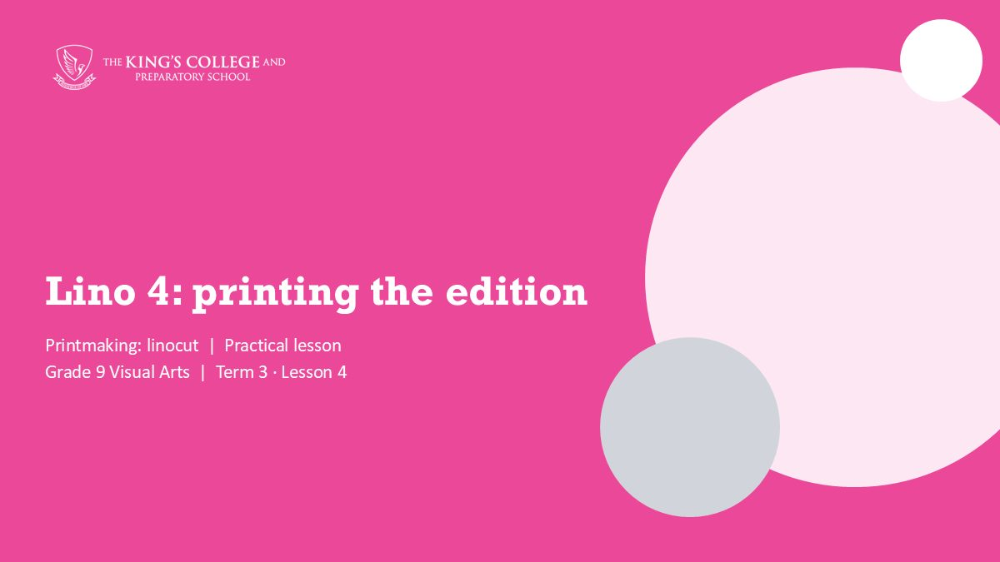

Term 3 · Lesson 4 · Practical lesson
Lino 4: printing the edition
Start here
Today I will
- Ink evenly and register my prints
- Print a small edition of three to five prints
- Sign and number my edition correctly
Think first
If a print is marked 2/5, what do you think the two numbers mean?
Words to know
- Registration
- Lining up the block and paper in exactly the same place for every print.
- Burnishing
- Rubbing the back of the paper with a baren or spoon to press it onto the inked block.
- Edition
- A set of identical prints from the same block.
- Edition number
- A fraction such as 3/5: the third print of an edition of five.
- Artist's proof (A/P)
- A print outside the numbered edition, often kept by the artist.
- Brayer
- A rubber roller for spreading ink thinly and evenly.
Slides

Notes
Inking evenly with the brayer, registration, burnishing; printing a small edition; signing in pencil (title, edition number, signature).
Printing the edition
- Registration: Place the block in the marked outline; line the paper up with the corner marks every time.
- Ink: Thin, even layer; re-ink the block for every print.
- Burnish: Rub firmly in small circles, covering the whole block.
- Lift and dry: Peel back slowly and place the print on the drying rack.
- Choose: Only the even, clean prints become the edition.
Signing a print
| Where (in pencil, under the image) | What it looks like |
|---|---|
| Left: edition number | 1/5, 2/5, 3/5… or A/P for an artist's proof |
| Centre: title | The name of your print |
| Right: signature and year | Your signature and 2027 |
Remember
Same place, same ink, same pressure: that is an edition.
Practical
You need: Block, black water-based ink, brayer, inking slab, baren or spoon, paper, registration template, drying rack, soft pencil
Print and sign the edition
- Set up the registration template and place your block in the outline.
- Roll out the ink thinly and ink the block.
- Place the paper using the corner marks, burnish and lift.
- Repeat until you have three to five good prints.
- When dry enough, sign each print in pencil: edition number, title, signature.
- Swap roles with your partner.
Assessment
Assessed (Term 3 practical): the lino print edition and practice block.
Test yourself
- What does 4/5 on a print mean?
- Why do we use a registration template?
- Where do you write the signature on a print?
Show answers
1. It is the fourth print in an edition of five. 2. So the block and paper line up in the same place every time. 3. In pencil, under the image on the right.